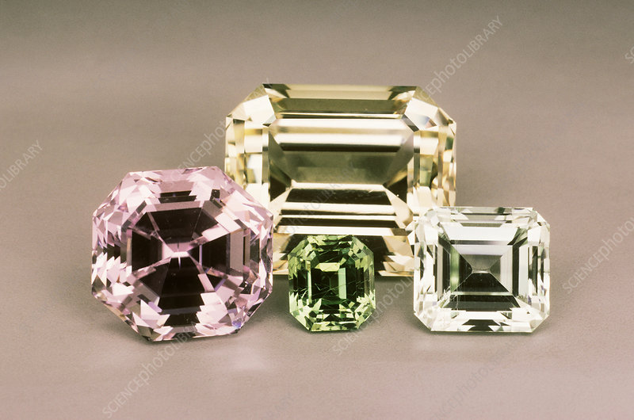

Spodumène
- Système cristalin : monoclinique
- Indice de réfraction : 1,655 à 1,680
- Birèfringence : biaxe +0,015
- Densité : 3,18
- Dureté : 7
- Couleur pour le spodumène : incolore vert jaune
- Couleur l'hidénite : vert coloré par du chrome donc rougit au flitre de chelsea
- Couleur la kunzite : violet rose
- Image :
